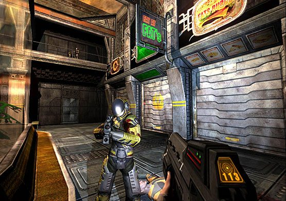

I am really starting to think that VALVe should just strike a license deal with Crytek for CRYengine and spend all of their time and resources from here on out making the best games, with the best art/design, best characters, best story… they are already pretty much doing that, but they will never be able to compete with some of these other engines… their time, money and manpower could be put to much better use. I guess I am also saying that I wish, oh so much, that VALVe games could look this fucking drop-dead gorgeous. I suppose VALVe would have a hell of a time making shit like Portal, with someone else’s engine… but damn…
For what it lacked in detail and throwing shaders at things to make them look shiny, it made up for in absolutely nailing the overall picture. Take this screen for example. Low rez textures, no AA, blah blah blah. The fact is, grass in other games at the time was just green grashish stuff with the brand new normal mapping people were going nuts about slapped over it. It was technologically impressive, but it was fucking green jelly. What Half Life 2 sported was grass.
Plus, compare it to the average 2004 game. These were still suffering from the old method of using the digital medium to make symbols of reality, whereas Valve artists were focusing on bringing reality right into the mix of things. None of the characters were exaggerated, the lighting was (and still is) great. The buildings were under detailed but had a convincing color palette and very nice photographed textures. Personally, this was a detractor for me because tech wasn’t ready for the game’s aesthetic at the time, but they had the right ideas.
Considering the best looking games around 2004 were F.E.A.R, Doom 3, Halo 2 and Riddick: EFBB, and they all looked relatively similar having used the tech as a flat out crutch instead of focusing on an aesthetic causing them all to look pretty much the same… well… Yeah.
HL2 was praised for it’s visual uniqueness of natural settings with lived in cities, rural areas, and wastelands in an era where all games looked like this :

half Life 2’s advantage was that they had a plan. They knew what it was going to look like before they even started putting it together, whereas other 2004 games were trying to change their look to suit the abilities of the modern tech.
Don’t make me do that college essay type shit again. It’s fucking summer.
Tbh, I do feel the heat that Valve is feeling from the consumer that their games are getting pretty old looking (and feeling) pretty quick. I also think that’s why they’ve been releasing all these tiny little stepping stone titles like l4d and Portal 2 (yes, that’s fucking tiny).
As for Crysis 3, ah… idk. I expect shit voice acting, shit AI, sound design that’s good for a few minutes then starts to grate, and pretty visuals. If it all hinges on level design, I don’t think I can get behind it. They have too many issues that they haven’t fucking sorted out since Far Cry.
Has engine licensing ever been a cash cow for anyone?
Does VALVe license Source to anyone?
I think it would be cool if game devs all started moving towards one big open source engine – that had everything, and in modules, that you could pick and choose from and plug into the engine. Then everyone would win. I am all for folks having a competitive edge… but better design and story is what wins in the end. This engine business has always struck me as munky-business.
Tell that to Epic. They’re swimming on the cash that comes from Unreal Engine licensing.
Valve has licensed the Source engine for several games, like Dark Messiah or Zeno Clash, but it’s not exactly selling like hot cakes.
Game developers choose to make their own engines either because they want full control over the code or because no other engine out there allows them to make whatever they want to do.
The bow looked cool… And that’s just about it…
Same Nanosuit, same mechanics;
How do they even say that the Nanosuit is “upgraded”? The modes are temporary power ups, not something that makes me feel special
That’s exactly what I’ve thought! (I swear I may have posted something about that here…)
I enjoyed the stories for Crysis, Warhead, and Crysis 2. Aside from the Nanosuit and the aliens/alien technology, the rest was rather believable.
Yes, Crysis 3 is in New York, and yes, it looks like we’re going to be stuck with Crysis 2’s stupid Nanosuit, but the story still seems interesting. I just want to know what happened in the 40 years between C2 and C3.
I also hope we are given a bigger picture. Crysis’s stories were a little too focused on their specific locations- there wasn’t enough to tell us what was happening elsewhere. Even if it’s through a cutscene, I’d like to see how the rest of the world was changed after the events of Crysis 2.
Well, due to some Disney caliber narrative ridiculousness, you’re not in a nanosuit. You’re a digital copy of Prophet’s mind downloaded into the corpse of a Marine whose body is sustaining a powered suit of armor. So…you kinda ARE a nanosuit.
I want to punch Crysis’s story in the fucking face. Ah well, at least they found a way to make the only good voice actor in the cast the main character.
Also, I too would like to see what’s going on on a global scale. Fuck, Crysis of all games would benefit from COD style globetrotting. Imagine huge open Crysis 1 style levels, but instead of all being the same Jungle/city bullshit, they’re all themed to different cities and countries and shit.
At least you were the marine in C2. I agree that things have gone crazy, but I suppose it still works- C2 emphasized the whole “post human warrior” theme, where death isn’t really the issue. Think about it- it seems we will be playing as a post human warrior in C3.
Am I the only one who wants to punch whoever thought “post-human warrior” was a good phrase and description in the face?
Also I always thought at the time HL2 had the most realistic-looking graphics - other games of the time had some “wow” tech, but HL2 always struck me as almost looking like a real world, partially thanks to the lighting and texture work.
Sure, Far Cry looked good at the time, but it had a very cartoonish look for the outsides, and a doom 3 plastic look on the insides
That’s also something that annoyed me about Crysis 2’s visuals. Crysis 1 seemed to use the material effects to a minimum and kept things looking realistic, but in Crysis 2 they started to go the plastic-y route that so many other games take to make believe they have good gfx.
I haven’t played Crysis 2 so could someone explain to me the difference in the nanosuit usage between Crysis 1/Warhead and 2? In Crysis 1 they were pretty much time limited buffs as well, based on your suit energy. Once you ran out you had to wait until the energy started refilling to use them again and they never lasted for a significant amount of time.
Crysis 2 armor drains your energy as you remain in it, and sprinting drains your energy - and a strength hit from holding the button drains your energy instantly. In Crysis 1 you could enable speed mode and your normal run would become a sprint that doesn’t drain energy, and you could sprint for an extremely fast but short burst of speed which you could use to launch yourself out of water like a dolphin, or off of rocks and cliffs to give you an aerial advantage over enemies, also your weapons and firemode switching would switch faster, and you would bash/punch fashter. Strength mode would allow you to do a bash/punch several times on several enemies and throw objects much farther like C2, but a “strength” throw in C2 uses up all your energy reserves, and strength leaps were taller then in C2 (possibly due to the level design for that though), and in C1 Strength allowed you to also throw your grenades a much longer distance as well.
Also armor didn’t drain energy until you got shot (but that mode was pretty shit in Crysis 1 unless you played on normal)
If you became adept enough at managing your suit modes, you could quite easily combine many of them together, so you could combine running off a cliff with a burst of speed with a strength jump to go high and far, or you could avoid detection completely when climbing over tall obstacles by timing your mode switching right with your jumps. In fact cloak is the only mode that has stayed the same.
A simple example of a combination maneuver might be jumping while speeding towards an enemy and switching modes to strength to do a heavy punch on him to kill him before you even land.
If you want to see an example of what you can do with some practice the suit in Crysis 1/Warhead, here is a good one
Skip to 1:24 if you don’t wish to hear the background dialogue
Basically the suit in C2 was quite streamlined - which wouldn’t have been that bad IF they had not decided to restrict your movement capabilities so much as well. Even if C3’s suit is the same, I hope they at least give you more precise control over your character’s movement. I found C2’s suit reminded me very much of playing Halo with slightly more control over your suit, which was not the impression I ever had from C1
^ I’ve been wishing for that since I got half way through Crysis 2 and people were all “You don’t look so good”
Crysis 2 had some nice materials imo. The problem is that for the most part they were inaccurate. Their skin shader has Subsurface Scattering, but it’s screen space nature means the “lightramp” for lack of a better term stays the same thickness no matter what distance. Meaning that if you’re far away from a person with human skin, the red “subdermis” layer would be covering their whole face. I assume that’s why all the human enemies have those huge obstructive helmets, and all the cinematic characters are kept close to the player. Plus, they don’t have the proper broken spotty specular with varying degrees of dulls and shaps that real human skin has, causing the entire effect to resemble wax more than flesh. Plus look at those huge fucking ridiculous shades of black.
Wrong wrong wrong wrong.
Other than some concrete being a bit too shiny, and glass looking 100% awful (I guess that can be blamed on the deferred render), everything else is pretty nice. But that’s because everything else is pretty easy to get right. I especially liked the image based lighting. I wish more games did it. I think the main issue is that Crysis 1’s materials were simple and flexible. Stuff like skin and cloth reacted to light the same way, and the whole visual ecosystem benefited from that. Crysis 2 tried for more complex materials, and got bit in the ass by inaccuracies. That’s… well that’s the whole problem with graphics really. It’s easy to do a lot with a little, but the moment you get more, you don’t know what the fuck to do with it. All of this new graphical ability is useless without extensive R&D, which is a field that’s seriously lacking in the games industry. It’s especially stupid because the industry encompasses some of the most talented artists anywhere right now, and these are people who know exactly what to look for when it comes to replicating the behavior of real materials.
God damn it the indistry man the man is bringing us down gaming is dead pc gaming is dwondling man god damn it bitch piss moan
Founded in 2004, Leakfree.org became one of the first online communities dedicated to Valve’s Source engine development. It is more famously known for the formation of Black Mesa: Source under the 'Leakfree Modification Team' handle in September 2004.


{kind=link}
{kind=link}
{kind=link}